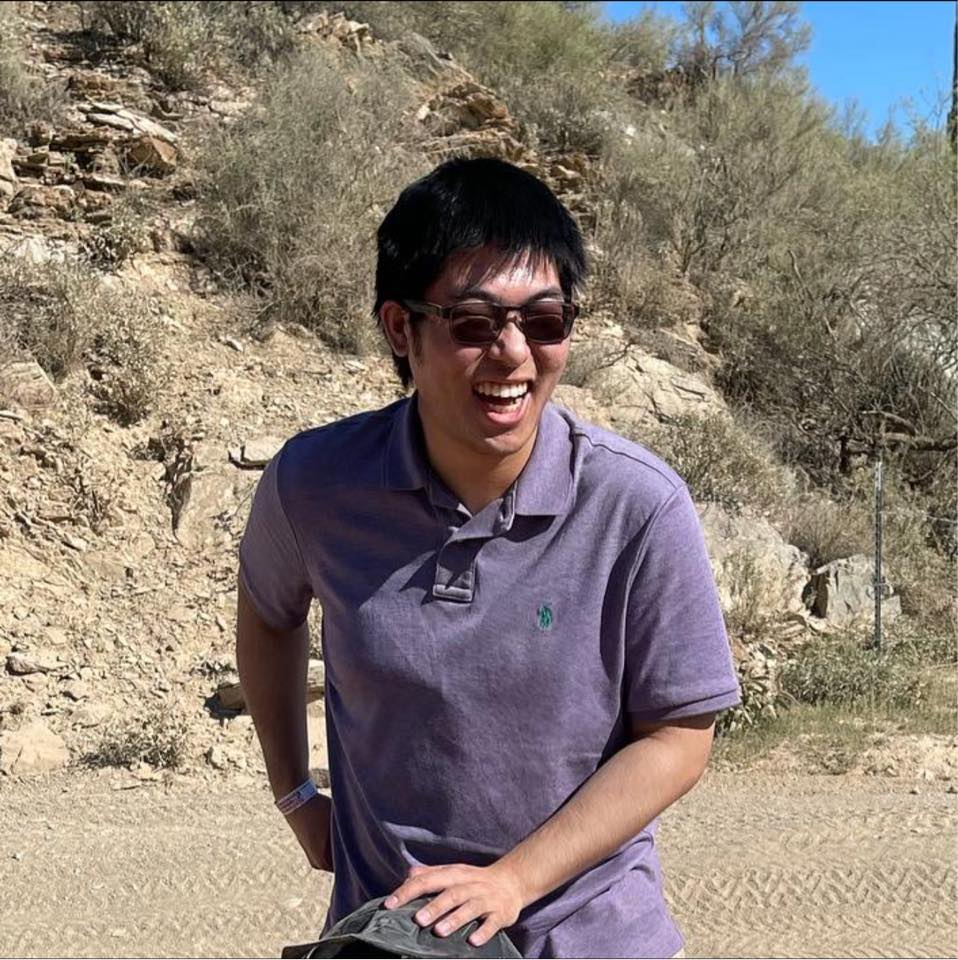

Erich Liang
I am a 3rd year Ph.D. student in Computer Science at Princeton University, advised by Prof. Jia Deng. My research interests include 3D vision, graphics, and generative modeling. I enjoy working on problems that help us combine geometric constraints with large-scale data to build 3D algorithms that mirror how humans perceive the world. Topics I've explored include:
- Imaging & Camera Calibration: lens optics and calibration for mapping 3D onto 2D images.
- 3D Reconstruction & Geometry: mesh reconstruction, inverse graphics, SLAM, NeRFs, 3DGS.
- Generative 3D Models: view-based 3D scene generation, occlusion reasoning, diffusion.
- Benchmarks & Evaluation: benchmarks, datasets, and metrics to train and evaluate 3D algorithms.
Previously, I served as a research assistant at BAIR, collaborating with Prof. Ren Ng and Prof. Avideh Zakhor. I graduated with a B.S. in Mathematics and Computer Science from Caltech, where I worked closely with Prof. Katie Bouman and Prof. Adam Wierman. I have also interned at companies such as Amazon, Meta, Bloomberg, and Microsoft.
Email: erliang [at] princeton [dot] edu
Dear prospective students: Click here for information.
Thank you for your interest in working with me! I am always looking for motivated students to join my research group.
For PhD applicants: Please apply through the formal admissions process at University Name. Feel free to mention my name in your application if you're interested in working with me. Due to the high volume of emails, I may not be able to respond to individual inquiries, but I carefully review all applications that list me as a potential advisor.
For current students: If you're already at University Name and interested in research opportunities (independent study, MS thesis, undergraduate research), please email me with your CV, transcript, and a brief description of your research interests. I typically have openings for 1-2 students per semester.
Research areas: My group works on machine learning, computer vision, and AI. We're particularly interested in projects involving few-shot learning, domain adaptation, and visual understanding. Strong programming skills (Python, PyTorch) and a solid foundation in ML/CV are essential.
Publications
Mentoring
I'm passionate about mentoring and have had the privilege of working with talented students on research projects.
Current Mentees
Undergraduate Student Name - Working on project about X (Fall 2024 - Present)
Master's Student Name - Working on project about Y (Summer 2024 - Present)
Past Mentees
Former Student Name - Worked on project about Z (Spring 2024). Now at Company/School Name.
Another Student Name - Worked on project about W (Fall 2023). Now at Company/School Name.
Teaching
I have experience as a teaching assistant for the following courses:
CS XXX: Introduction to Machine Learning - Teaching Assistant, Fall 2024
Held office hours, graded assignments, and developed course materials.
CS XXX: Computer Vision - Teaching Assistant, Spring 2024
Assisted with lectures, created homework problems, and mentored student projects.
CS XXX: Deep Learning - Teaching Assistant, Fall 2023
Led recitation sections and helped students with PyTorch implementations.